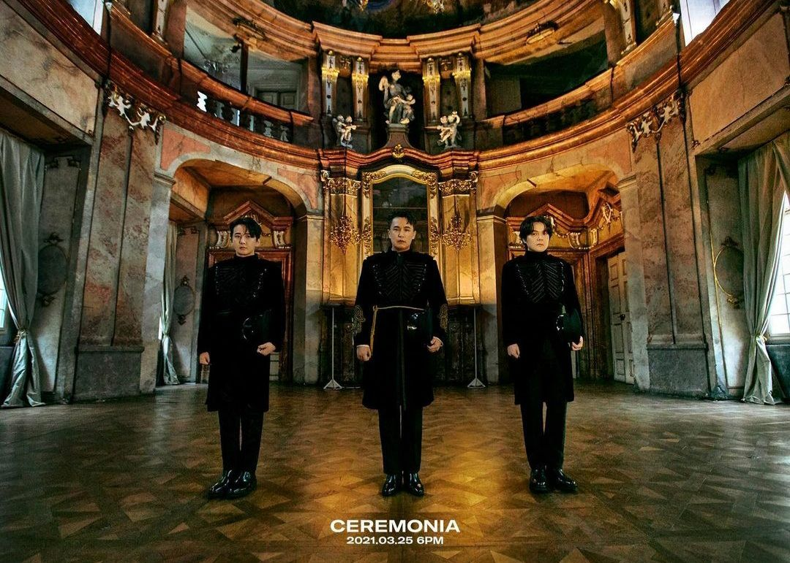

대한민국의 3인조 밴드
- 이수
- 제이윤
- 전민혁
팀내 포지션은 이수가 보컬과 기타, 전민혁이 드럼을 담당한다.
그리고 엠씨더맥스의 영원한 3번째 멤버, 제이윤이 생전 베이스와 바이올린을 담당했다.
대표곡들의 대부분이 하늘까지 뚫고 올라가는 미친 고음을 자랑한다.
여러 사람들을 힘들게 만드는 이 고음이 바로 엠씨더맥스의 진정한 무기이자 정체성이라 할 수 있다.
흉악한 난이도 + 아름다운 멜로디의 노래가 엄청나게 많아서 그런지 노래방에서의 인기는 거의 독보적이다.
노래방 연간 인기곡 TOP 100 에 기본 4곡, 많으면 6곡 정도가 랭크되는 TOP 100 인기곡 보유 1위 아티스트이다.
